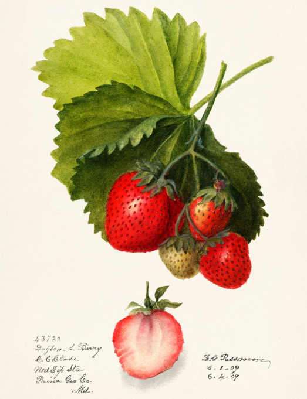

The garden strawberry (or simply strawberry; Fragaria × ananassa) is a widely grown hybrid cultivated worldwide for its fruit. The genus Fragaria, the strawberries, is in the rose family, Rosaceae. The fruit is appreciated for its aroma, bright red colour, juicy texture, and sweetness. It is eaten either fresh or in prepared foods such as jam, ice cream, and chocolates. Artificial strawberry flavourings and aromas are widely used in commercial products. Botanically, the strawberry is not a berry, but an aggregate accessory fruit. Each apparent 'seed' on the outside of the strawberry is actually an achene, a botanical fruit with a seed inside it.
The garden strawberry was first bred in Brittany, France, in the 1750s via a cross of F. virginiana from eastern North America and F. chiloensis, which was brought from Chile by Amédée-François Frézier in 1714. Cultivars of F. × ananassa have replaced the woodland strawberry F. vesca in commercial production. In 2022, world production of strawberries exceeded nine million tons, led by China with 35% of the total.
Strawberries have appeared in literature and art from Roman times; Virgil wrote about the snake lurking beneath the strawberry, an image reinterpreted by later writers including Shakespeare. Strawberries appear in Italian, Flemish, and German paintings, including Hieronymus Bosch's The Garden of Earthly Delights. It has been understood to symbolise the ephemerality of earthly joys or the benefit that blessed souls get from religion, or to allegorise death and resurrection. By the late 20th century, its meaning had shifted: it symbolised female sexuality.
Evolution
History and Taxonomy
In Europe, until the 17th century cultivated plants were obtained by transplanting strawberries from the forests; the plants were propagated asexually by pegging down the runners, allowing them to root, and then separating the new plants.[2] F. virginiana, the Virginia strawberry, was brought to Europe from eastern North America; F. chiloensis, the Chilean strawberry, was brought from Chile by Amédée-François Frézier in 1714. At first introduction to Europe, the Chilean strawberry plants grew vigorously, but produced no fruit. French gardeners in Brittany in the 1750s noticed that the Chilean plants bore only female flowers. They planted the wild woodland strawberry F. vesca among the Chilean plants to provide pollen; the Chilean strawberry plants then bore abundant fruits.
Phylogeny
The phylogeny of the cultivated strawberry within the genus Fragaria of the Rosaceae family was determined by chloroplast genomics in 2021. The polyploidy (number of sets of chromosomes) is shown as "2N" etc. by each species.
Description
In culinary terms, a strawberry is an edible fruit. From a botanical point of view, it is not a berry but an aggregate accessory fruit, because the fleshy part is derived from the receptacle. Each apparent seed on the outside of the strawberry is actually an achene, a botanical fruit with a seed inside it.
Composition
Nutrition
Raw strawberries are 91% water, 8% carbohydrates, 1% protein, and contain negligible fat (table). A reference amount of 100 grams (3.5 oz) supplies 33 kilocalories, is a rich source of vitamin C (65% of the Daily Value, DV), and a good source of manganese (17% DV), with no other micronutrients in significant content (table). Strawberries contain a modest amount of essential unsaturated fatty acids in the achene (seed) oil.[11]
Phytochemicals
Garden strawberries contain diverse phytochemicals, including the dimeric ellagitannin agrimoniin, which is an isomer of sanguiin H-6.[12][13] Other polyphenols present include flavonoids, such as anthocyanins, flavanols, flavonols and phenolic acids, such as hydroxybenzoic acid and hydroxycinnamic acid.[11] Although achenes comprise only about 1% of the total fresh weight of a strawberry, they contribute 11% of all polyphenols in the whole fruit; achene phytochemicals include ellagic acid, ellagic acid glycosides, and ellagitannins.[14]
Pelargonidin-3-glucoside is the major anthocyanin pigment in strawberries, giving them their red colour, with cyanidin-3-glucoside in smaller amounts. Strawberries also contain purple minor pigments, such as dimeric anthocyanins.[15]
Flavor and Fragrance
Sweetness, fragrance and complex flavour are important attributes of strawberries.[16] In plant breeding and farming, emphasis is placed on sugars, acids, and volatile compounds, which improve the taste and fragrance of the ripe fruit.[17] Esters, terpenes, and furans are the chemical compounds having the strongest relationships to strawberry flavour, sweetness and fragrance, with a total of 31 out of some 360 volatile compounds significantly correlated to desirable flavour and fragrance.[17][18][19] In breeding strawberries for the commercial market in the United States, the volatile compounds methyl anthranilate and gamma-decalactone, prominent in aromatic wild strawberries, are especially desired for their "sweet and fruity" aroma characteristics.[18][19] As strawberry flavour and fragrance appeal to consumers,[18][19][20] they are used widely in manufacturing, including foods, beverages, perfumes and cosmetics.[21][22]